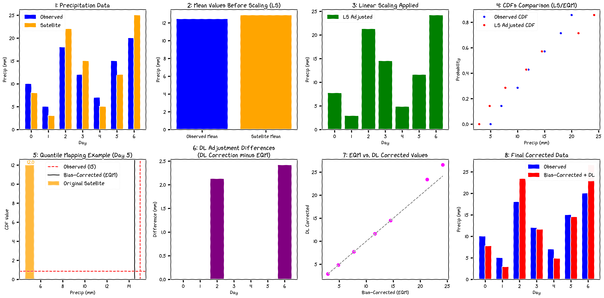

Methodology Overview
Adjusting values, aligning distributions, preserving extremes - with neural refinement where station density allows.
The framework is built around a simple idea: a statistical core (LSEQM) handles the marginal distribution honestly, and a CNN adds spatial refinement only where gauge density supports it. The result is a correction that is conservative where data is sparse and confident where it is not.
The tagline maps directly to the three correction stages:
| Stage | Action | What it touches |
|---|---|---|
| Linear Scaling (LS) | Adjusting values | The long-term mean - first moment |
| Empirical Quantile Mapping (EQM) | Aligning distributions | The full daily distribution shape - the body |
| GPD tail correction | Preserving extremes | The right tail above the 80th percentile |
Each stage operates on a distinct aspect of the distribution; together they bring IMERG’s marginal distribution into line with the reference. The CNN refinement (LSEQM+DL) then adds a spatial pattern on top, gated by the station-density confidence mask.
For the theory of each stage - what it does and why - read the pages below. For the algorithm - which functions in src/, complexity, gotchas - see the parallel Implementation section.

The chain
Linear Scaling (LS) matches the long-term mean per dekad. Cheap, transparent, and a sensible first pass even when nothing else is fit. See Linear Scaling.
Empirical Quantile Mapping (EQM) reshapes the full daily distribution. A Gamma fit is used for the body of the distribution. See EQM.
GPD tail replaces the right tail of the EQM-corrected field with a Generalized Pareto fit above an 80th-percentile threshold. This prevents EQM from saturating at the highest observed quantile. See GPD Tail.
CNN refinement trains a small 2-layer convolutional network to learn the residual spatial bias of LSEQM versus CPC. The CNN sees the LSEQM field and produces a refined extreme field. See CNN Refinement.
Station-density confidence mask scales the CNN’s influence by local gauge density. See Confidence Mask.
Blending combines LSEQM and the CNN output using the confidence mask. See Blending.
Why this layering, in one paragraph
A pure statistical method works distribution-by-distribution and ignores neighbouring pixels - that is fine for the body but produces visible block boundaries at the CPC native resolution and underestimates the spatial coherence of heavy rain events. A pure CNN handles spatial structure beautifully but is happy to hallucinate rain where no gauge ever saw any. Keeping LSEQM as the floor and only adding CNN where stations are dense gives you a correction that degrades gracefully toward LSEQM in poorly observed areas, instead of degrading toward a CNN’s best guess.
Where the parameters come from
Three parameters control the trade-off between aggressiveness and conservatism:
| Parameter | Default | Tunes |
|---|---|---|
blend_alpha |
0.70 | LSEQM share at full confidence (0.70 = 70% LSEQM, 30% CNN) |
gpd_threshold_percentile |
80 | Where the GPD tail takes over from the gamma body |
saturation_count |
2 - 3 | Station count at which the confidence mask saturates |
These were chosen by inspection rather than formal optimization. Sensitivity to each is documented in the corresponding methodology page and acknowledged as a limitation in the companion manuscript (in preparation).
Temporal unit
All parameters are fit per dekad (10-day window, 36 per year). See Data Model for why.